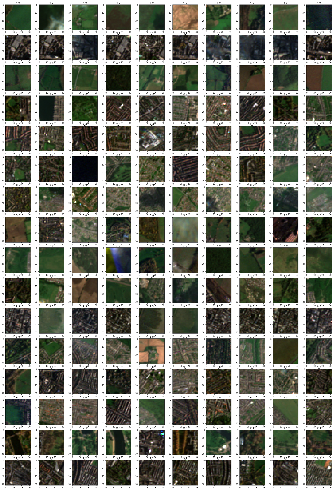
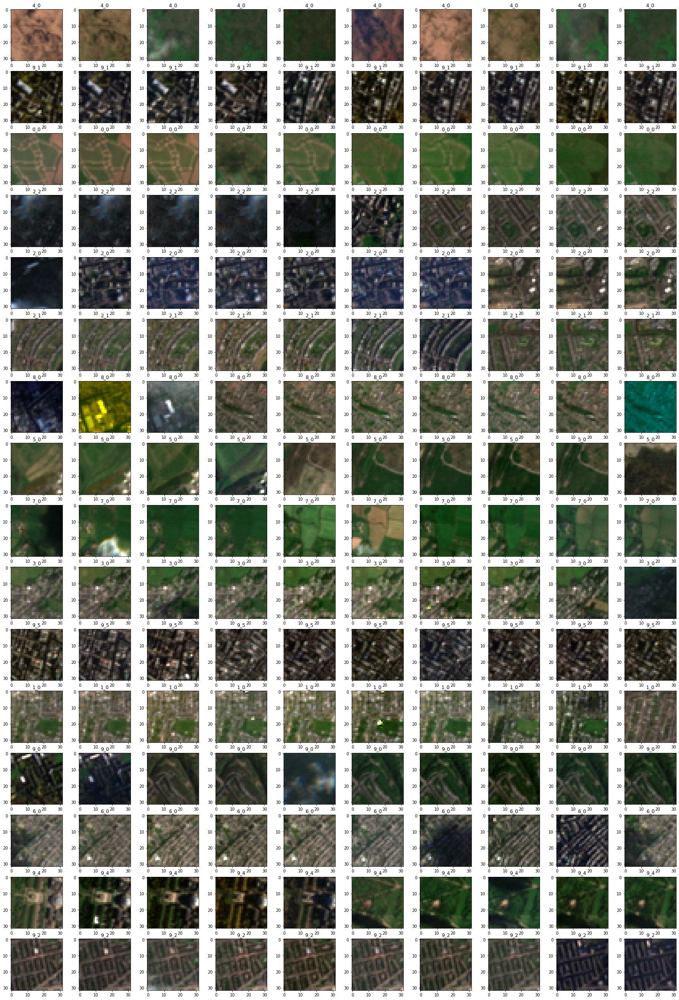

Plot temporal tiles¶
Plot a small subset of temporal tiles to check them visually.
import glob
import matplotlib.pyplot as plt
import rasterio
import random
folders = glob.glob("/home/jovyan/work/chips_gb/32_temporal/train/*")
folders
['/home/jovyan/work/chips_gb/32_temporal/train/4_0',
'/home/jovyan/work/chips_gb/32_temporal/train/9_1',
'/home/jovyan/work/chips_gb/32_temporal/train/0_0',
'/home/jovyan/work/chips_gb/32_temporal/train/2_2',
'/home/jovyan/work/chips_gb/32_temporal/train/9_6',
'/home/jovyan/work/chips_gb/32_temporal/train/2_0',
'/home/jovyan/work/chips_gb/32_temporal/train/2_1',
'/home/jovyan/work/chips_gb/32_temporal/train/8_0',
'/home/jovyan/work/chips_gb/32_temporal/train/5_0',
'/home/jovyan/work/chips_gb/32_temporal/train/7_0',
'/home/jovyan/work/chips_gb/32_temporal/train/3_0',
'/home/jovyan/work/chips_gb/32_temporal/train/9_5',
'/home/jovyan/work/chips_gb/32_temporal/train/1_0',
'/home/jovyan/work/chips_gb/32_temporal/train/9_0',
'/home/jovyan/work/chips_gb/32_temporal/train/6_0',
'/home/jovyan/work/chips_gb/32_temporal/train/9_4',
'/home/jovyan/work/chips_gb/32_temporal/train/9_2']
Random sample per signature type.
fig, axs = plt.subplots(16, 10, figsize=(30, 45))
a = 0
for f in folders:
if f[-3:] == "9_6":
continue
files = glob.glob(f + "/*")
sample = random.sample(files, 10)
for i, s in enumerate(sample):
with rasterio.open(s) as src:
arr = src.read()
axs[a, i].imshow(arr.T)
axs[a, i].set_title(f[-3:])
a += 1
plt.savefig("chips.png")

First 10 chips per class (should often show the same place).
fig, axs = plt.subplots(16, 10, figsize=(30, 45))
a = 0
for f in folders:
if f[-3:] == "9_6":
continue
files = glob.glob(f + "/*")
files.sort()
sample = files[:10]
for i, s in enumerate(sample):
with rasterio.open(s) as src:
arr = src.read()
axs[a, i].imshow(arr.T)
axs[a, i].set_title(f[-3:])
a += 1
plt.savefig("chips_sorted.png")
